Train and test an NMF model for a type of 1D monitoring element
This notebook showcases how to use an NMF model for a 1D monitoring element.
It consists of the following steps:
- Loading the data
- Applying selections (e.g. DCS-bit on and sufficient statistics)
- Preprocessing (e.g. normalizing)
- Building an NMF model
- Investigating the output
You can use this notebook both for global training (training on a large dataset) and for local training (training on a small number of well-chosen runs).
### imports
# external modules
import sys
import os
import numpy as np
import matplotlib.pyplot as plt
# local modules
sys.path.append('../utils')
import csv_utils as csvu
import dataframe_utils as dfu
import json_utils as jsonu
import hist_utils as hu
import autoencoder_utils as aeu
import plot_utils as pu
import generate_data_utils as gdu
sys.path.append('../src')
sys.path.append('../src/classifiers')
sys.path.append('../src/cloudfitters')
import DataLoader
import HistStruct
import ModelInterface
import NMFClassifier
import IdentityFitter
2022-07-26 17:24:20.766349: W tensorflow/stream_executor/platform/default/dso_loader.cc:64] Could not load dynamic library 'libcudart.so.11.0'; dlerror: libcudart.so.11.0: cannot open shared object file: No such file or directory; LD_LIBRARY_PATH: /cvmfs/sft.cern.ch/lcg/releases/MCGenerators/thepeg/2.2.1-8d929/x86_64-centos7-gcc8-opt/lib/ThePEG:/cvmfs/sft.cern.ch/lcg/releases/MCGenerators/herwig++/7.2.1-f3599/x86_64-centos7-gcc8-opt/lib/Herwig:/cvmfs/sft.cern.ch/lcg/views/LCG_101swan/x86_64-centos7-gcc8-opt/lib/python3.9/site-packages/torch/lib:/cvmfs/sft.cern.ch/lcg/views/LCG_101swan/x86_64-centos7-gcc8-opt/lib/python3.9/site-packages/tensorflow:/cvmfs/sft.cern.ch/lcg/views/LCG_101swan/x86_64-centos7-gcc8-opt/lib/python3.9/site-packages/tensorflow/contrib/tensor_forest:/cvmfs/sft.cern.ch/lcg/views/LCG_101swan/x86_64-centos7-gcc8-opt/lib/python3.9/site-packages/tensorflow/python/framework:/cvmfs/sft.cern.ch/lcg/releases/java/8u222-884d8/x86_64-centos7-gcc8-opt/jre/lib/amd64:/cvmfs/sft.cern.ch/lcg/views/LCG_101swan/x86_64-centos7-gcc8-opt/lib64:/cvmfs/sft.cern.ch/lcg/views/LCG_101swan/x86_64-centos7-gcc8-opt/lib:/cvmfs/sft.cern.ch/lcg/releases/gcc/8.3.0-cebb0/x86_64-centos7/lib:/cvmfs/sft.cern.ch/lcg/releases/gcc/8.3.0-cebb0/x86_64-centos7/lib64:/cvmfs/sft.cern.ch/lcg/releases/binutils/2.30-e5b21/x86_64-centos7/lib:/usr/local/lib/:/cvmfs/sft.cern.ch/lcg/releases/R/3.6.3-dfb24/x86_64-centos7-gcc8-opt/lib64/R/library/readr/rcon
2022-07-26 17:24:20.766409: I tensorflow/stream_executor/cuda/cudart_stub.cc:29] Ignore above cudart dlerror if you do not have a GPU set up on your machine.
### define run properties
# in this cell all major run properties are going to be set,
# e.g. what runs to train on and what runs to test on
# define a list of good 'reference' runs
# (e.g. found by eye)
goodrunsls = {'2017':
{
"297056":[[-1]],
"297177":[[-1]],
"301449":[[-1]],
}
}
# define core test set of clearly bad runs
# (e.g. found by eye)
badrunsls = {'2017':
{
"297287":[[-1]],
"297288":[[-1]],
"297289":[[-1]],
"299316":[[-1]],
"299324":[[-1]],
#"299326":[[-1]],
}
}
# set year to use
year = '2017'
# set histogram names to use
histname = 'chargeInner_PXLayer_2'
# set whether to train globally or locally
training_mode = 'global'
if training_mode == 'global':
runsls_training = None # use none to not add a mask for training (can e.g. use DCS-bit on mask)
runsls_good = None # use none to not add a mask for good runs (can e.g. use templates)
runsls_bad = badrunsls[year] # predefined bad runs
print('selected runs/lumisections for training: all')
elif training_mode == 'local':
# train locally on a small set of runs
# for now on n runs preceding a chosen application run,
# to be extended with choosing reference runs.
# select application run
available_runs = dfu.get_runs( dfu.select_dcson( csvu.read_csv('../data/DF'+year+'_'+histname+'.csv') ) )
run_application = 305351
run_application_index = available_runs.index(run_application)
# select training set
ntraining = 5
runsls_training = jsonu.tuplelist_to_jsondict([(el,[-1]) for el in available_runs[run_application_index-ntraining:run_application_index]])
runsls_bad = badrunsls[year]
runsls_good = jsonu.tuplelist_to_jsondict([(run_application,[-1])])
print('selected runs/lumisections for training: ')
print(runsls_training)
print('selected runs/lumisections as good test set:')
print(runsls_good)
print('selected runs/lumisections as bad test set:')
print(runsls_bad)
selected runs/lumisections for training: all
### read the data based on the configuration defined above
readnew = True
if readnew:
# initializations
dloader = DataLoader.DataLoader()
histstruct = HistStruct.HistStruct()
print('adding {}...'.format(histname))
# read the histograms from the correct csv files
filename = '../data/DF'+year+'_'+histname+'.csv'
df = dloader.get_dataframe_from_file( filename )
# in case of local training, we can remove most of the histograms
if( runsls_training is not None and runsls_good is not None and runsls_bad is not None ):
runsls_total = {k: v for d in (runsls_training, runsls_good, runsls_bad) for k, v in d.items()}
df = dfu.select_runsls( df, runsls_total )
histstruct.add_dataframe( df )
print('found {} histograms'.format(len(histstruct.runnbs)))
# add masks
histstruct.add_dcsonjson_mask( 'dcson' )
histstruct.add_goldenjson_mask('golden' )
histstruct.add_highstat_mask( 'highstat' )
if runsls_training is not None: histstruct.add_json_mask( 'training', runsls_training )
if runsls_good is not None: histstruct.add_json_mask( 'good', runsls_good )
nbadruns = 0
if runsls_bad is not None:
histstruct.add_json_mask( 'bad', runsls_bad )
# special case for bad runs: add a mask per run (different bad runs have different characteristics)
nbadruns = len(runsls_bad.keys())
for i,badrun in enumerate(runsls_bad.keys()):
histstruct.add_json_mask( 'bad{}'.format(i), {badrun:runsls_bad[badrun]} )
if not readnew:
histstruct = HistStruct.HistStruct.load( hsfilename )
nbadruns = len([name for name in list(histstruct.masks.keys()) if 'bad' in name])
print('created a histstruct with the following properties:')
print('- number of histogram types: {}'.format(len(histstruct.histnames)))
print('- number of lumisections: {}'.format(len(histstruct.lsnbs)))
print('- masks: {}'.format(list(histstruct.masks.keys())))
adding chargeInner_PXLayer_2...
INFO in DataLoader.get_dataframe_from_file: loading dataframe from file ../data/DF2017_chargeInner_PXLayer_2.csv...
INFO in DataLoader.get_dataframe_from_file: sorting the dataframe...
INFO in DataLoader.get_dataframe_from_file: loaded a dataframe with 225954 rows and 16 columns.
found 225954 histograms
created a histstruct with the following properties:
- number of histogram types: 1
- number of lumisections: 225954
- masks: ['dcson', 'golden', 'highstat', 'bad', 'bad0', 'bad1', 'bad2', 'bad3', 'bad4']
skipthiscell = False
if( training_mode=='local' and not skipthiscell ):
# training and application runs
histstruct.plot_histograms( masknames=[['dcson','highstat','training'],['highstat','good']],
labellist = ['training','testing'],
colorlist = ['blue','green']
)
# application run and bad test runs
histstruct.plot_histograms( masknames=[['dcson','highstat','good'],['bad']],
labellist = ['good','bad'],
colorlist = ['green','red']
)
### extend the training set using artificial data
extendtraining = False
if extendtraining:
histstruct.exthistograms['training'] = {}
print('generating artificial training data for '+histname)
hists = histstruct.get_histograms( histname=histname, masknames=['dcson','highstat','training'] )
print(' original number of histograms: {}'.format(len(hists)))
(exthists,_,_) = gdu.upsample_hist_set(hists, 5e4, doplot=True )
histstruct.add_exthistograms( 'training', histname, exthists )
print(' -> generated {} histograms'.format(len(histstruct.exthistograms['training'][histname])))
### define and train an NMF model
modelname = 'nmfclassifier'
model = ModelInterface.ModelInterface( histstruct.histnames )
if training_mode=='local':
training_masks = ['dcson','highstat','training']
hists_train = histstruct.get_histograms( histname=histname, masknames=training_masks )
elif training_mode=='global':
training_masks = ['dcson','highstat']
# use all available data for training (with DCS-on and statistics selection)
#hists_train = histstruct.get_histograms( histname=histname, masknames=training_masks )
# this can however take a long time... alternatively, use averaged histograms for training
hists_train = hu.averagehists( histstruct.get_histograms( histname=histname, masknames=training_masks ), 1000 )
if extendtraining: hists_train = histstruct.get_exthistograms( 'training', histname=histname )
classifier = NMFClassifier.NMFClassifier( ncomponents=3 )
classifier.train( hists_train )
classifier.set_nmax( 10 )
classifier.set_loss_type( 'chi2' )
model.set_classifiers( {histname: classifier} )
histstruct.add_model( modelname, model )
/cvmfs/sft.cern.ch/lcg/views/LCG_101swan/x86_64-centos7-gcc8-opt/lib/python3.9/site-packages/sklearn/decomposition/_nmf.py:312: FutureWarning: The 'init' value, when 'init=None' and n_components is less than n_samples and n_features, will be changed from 'nndsvd' to 'nndsvda' in 1.1 (renaming of 0.26).
warnings.warn(("The 'init' value, when 'init=None' and "
/cvmfs/sft.cern.ch/lcg/views/LCG_101swan/x86_64-centos7-gcc8-opt/lib/python3.9/site-packages/sklearn/decomposition/_nmf.py:1090: ConvergenceWarning: Maximum number of iterations 200 reached. Increase it to improve convergence.
warnings.warn("Maximum number of iterations %d reached. Increase it to"
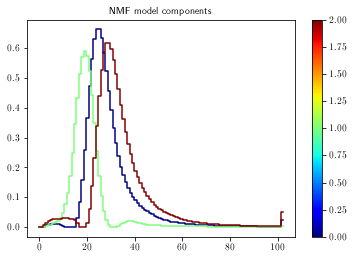
adding model "nmfclassifier" to the HistStruct
### plot the NMF components
components = classifier.get_components()
_ = pu.plot_hists_multi( components, colorlist=list(range(len(components))), xaxtitle='bin number', yaxtitle='arbitrary units', title='NMF components' )
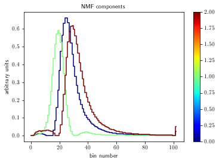
### evaluate the models on all histograms in the (non-extended) histstruct
print('evaluating model for '+histname)
histstruct.evaluate_classifier( modelname, histname )
evaluating model for chargeInner_PXLayer_2
### train a density fitter on the scores obtained by the NMF model
histstruct.set_fitter( modelname, IdentityFitter.IdentityFitter() )
histstruct.train_fitter( modelname, masknames=training_masks )
histstruct.evaluate_fitter( modelname )
### extend the test set using artificial data generation and evaluate the model on the extended test set
# make the extra data
print('generating data for '+histname)
if 'good' in histstruct.masks.keys():
goodhists = histstruct.get_histograms( histname=histname,masknames=['dcson','highstat','good'] )
else:
goodhists = hu.averagehists( histstruct.get_histograms( histname=histname, masknames=['dcson','highstat'] ), 15 )
(goodexthists,_,_) = gdu.upsample_hist_set( goodhists,ntarget=nbadruns*5e3,fourierstdfactor=20., doplot=False)
histstruct.add_exthistograms( 'good', histname, goodexthists, overwrite=True )
# alternative: copy original good set (e.g. for using resampled bad but original good)
#histstruct.add_exthistograms( 'good', histname, goodhists )
for i in range(nbadruns):
badhists = histstruct.get_histograms( histname=histname,masknames=['dcson','highstat','bad{}'.format(i)] )
(badexthists,_,_) = gdu.upsample_hist_set( badhists,ntarget=5e3,fourierstdfactor=20., doplot=False)
histstruct.add_exthistograms( 'bad{}'.format(i), histname, badexthists, overwrite=True )
# evaluate the classifiers
print('evaluating: '+histname)
histstruct.evaluate_classifier( modelname, histname, setnames=['good'] )
for i in range(nbadruns):
histstruct.evaluate_classifier( modelname, histname, setnames=['bad{}'.format(i)])
# evaluate the fitter
print('evaluating fitter')
histstruct.evaluate_fitter( modelname, setnames=['good'] )
for i in range(nbadruns):
histstruct.evaluate_fitter( modelname, setnames=['bad{}'.format(i)] )
generating data for chargeInner_PXLayer_2
evaluating: chargeInner_PXLayer_2
evaluating fitter
### get the scores
# get the log probability for good set
prob_good = histstruct.get_globalscores( modelname, setnames=['good'] )
logprob_good = np.log(prob_good)
# get the log probability for bad set
prob_bad = histstruct.get_globalscores( modelname, setnames=['bad{}'.format(i) for i in range(nbadruns)] )
logprob_bad = np.log(prob_bad)
### make a roc curve based on the test results above
labels_good = np.zeros(len(logprob_good)) # background: label = 0
labels_bad = np.ones(len(logprob_bad)) # signal: label = 1
labels = np.concatenate(tuple([labels_good,labels_bad]))
scores = np.concatenate(tuple([-logprob_good,-logprob_bad]))
pu.plot_score_dist(scores, labels, nbins=1000, normalize=True)
auc = aeu.get_roc(scores, labels, mode='geom', bootstrap_samples=100, doprint=False)
aeu.get_confusion_matrix(scores, labels, wp='maxauc')
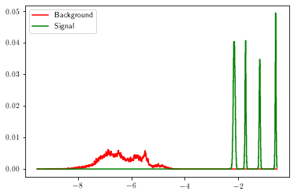
calculating ROC curve on 100 bootstrap samples of size 49958
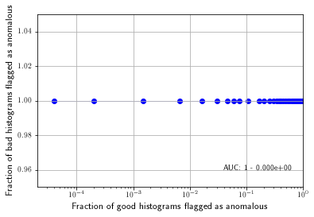
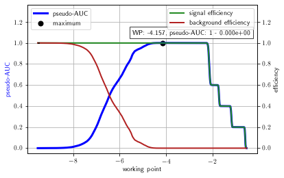
(-4.156618406017773, <Figure size 432x288 with 2 Axes>, <AxesSubplot:>)
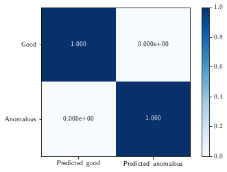
### plot some random examples
# define reference histograms
refhists = {}
if( 'good' in histstruct.masks.keys() ):
refhists[histname] = hu.averagehists( histstruct.get_histograms( histname=histname, masknames=['highstat','dcson','good']), 15 )
else:
refhists[histname] = hu.averagehists( histstruct.get_histograms( histname=histname, masknames=['dcson','highstat'] ), 15 )
# define number of plots to make
nplot = 10
# make plots for good histograms
print('example histograms from the good test set:')
runnbs_good = histstruct.get_runnbs( masknames=['highstat','dcson'] )
lsnbs_good = histstruct.get_lsnbs( masknames=['highstat','dcson'] )
indices = np.random.choice( np.arange(len(runnbs_good)), size=nplot, replace=False )
for i in indices:
_ = histstruct.plot_ls( runnbs_good[i], lsnbs_good[i], recohist='nmfclassifier', refhists=refhists )
plt.show()
# make plots for bad histograms
print('example histograms from the bad test set:')
runnbs_bad = histstruct.get_runnbs( masknames=['dcson','bad'] )
lsnbs_bad = histstruct.get_lsnbs( masknames=['dcson','bad'] )
indices = np.random.choice( np.arange(len(runnbs_bad)), size=nplot, replace=False )
for i in indices:
_ = histstruct.plot_ls( runnbs_bad[i], lsnbs_bad[i], recohist='nmfclassifier', refhists=refhists )
plt.show()
example histograms from the good test set:
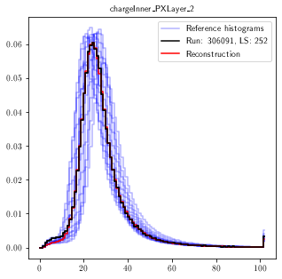
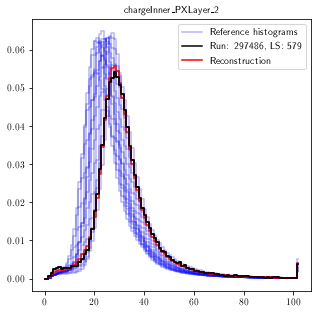
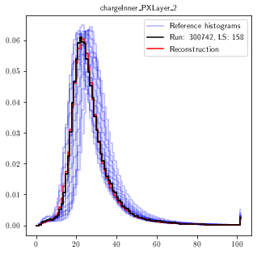
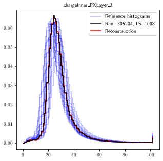

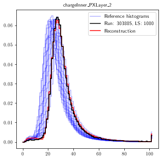
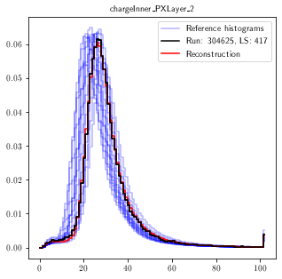
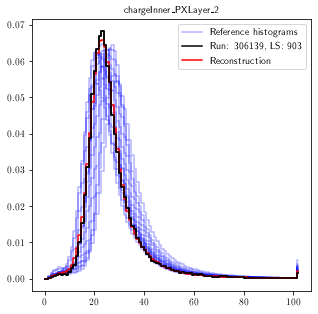
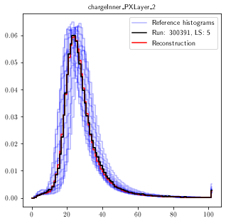
example histograms from the bad test set:
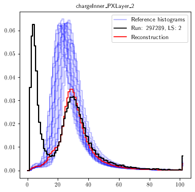
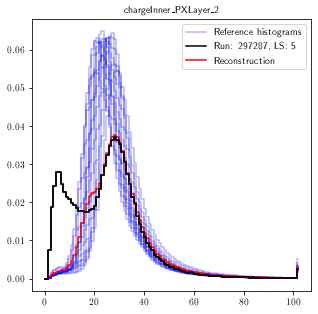
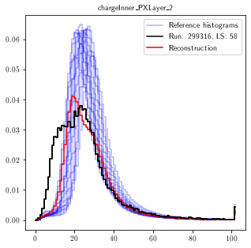
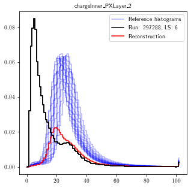
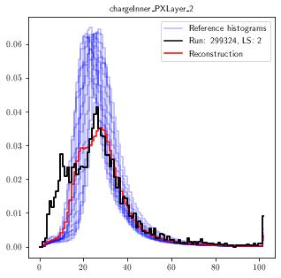
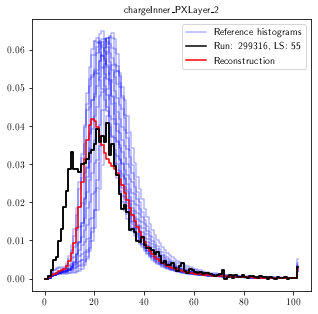
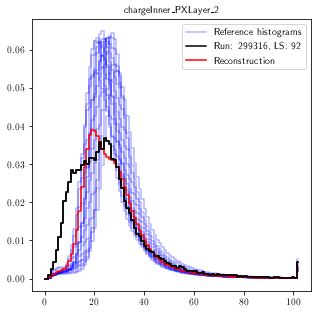

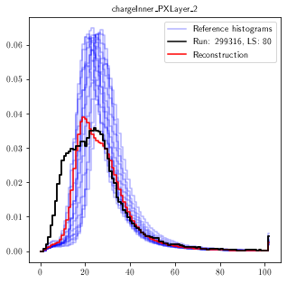
### investigate particular lumisections
# initialization: general
mode = 'run'
run = 299316
# for mode 'ls' (ignored if mode is 'run'):
ls = 70
# for mode 'run' (ignored if mode is 'ls'):
run_masknames = ['dcson','highstat']
# initialization: reference scores
plot_refscores = True
refscore_masknames = ['dcson','highstat']
# initialization: reference histograms
refhists = {}
for histname in histstruct.histnames:
refhists[histname] = hu.averagehists( histstruct.get_histograms( histname=histname, masknames=['highstat','dcson']), 50 )
if mode=='ls':
# plot this particular run/ls
fig,axs = histstruct.plot_ls( run, ls, recohist=None, refhists=refhists,
opaque_legend=True,
ncols = 3,
physicalxax = True,
ymaxfactor = 1.3,
legendsize = 13
)
# print the mses
msepoint = histstruct.get_scores_ls( modelname, run, ls )
logprob = np.log( histstruct.evaluate_fitter_on_point( modelname, msepoint ) )
print('-------------')
print('MSE values:')
for histname in histstruct.histnames: print('{} : {}'.format(histname,msepoint[histname]))
print('-------------')
print('logprob: '+str(logprob))
# plot mse distribution
if plot_refscores:
fig,axs = histstruct.plot_ls_score( modelname, run, ls, masknames=refscore_masknames,
nbins=100, normalize=True,
siglabel='This lumisection', bcklabel='All lumisections',
sigcolor='k', bckcolor='b',
title=None,
xaxtitle='MSE', xaxtitlesize=15,
yaxtitle='Normalized number of lumisections', yaxtitlesize=15,
doshow=False)
if mode=='run':
# plot given run
runnbs = histstruct.get_runnbs( masknames=run_masknames )
lsnbs = histstruct.get_lsnbs( masknames=run_masknames )
runsel = np.where(runnbs==run)
lsnbs = lsnbs[runsel]
print('plotting {} lumisections...'.format(len(lsnbs)))
for lsnb in lsnbs:
fig,ax = histstruct.plot_ls(run, lsnb, recohist=None, refhists=refhists, opaque_legend=True )
plt.show()
msepoint = histstruct.get_scores_ls( modelname, run, lsnb )
msepointarray = np.array([msepoint[histname] for histname in histstruct.histnames])
logprob = np.log( histstruct.evaluate_fitter_on_point( modelname, msepoint ) )
print('-------------')
print('MSE values:')
for histname in histstruct.histnames: print('{} : {}'.format(histname,msepoint[histname]))
print('-------------')
print('logprob: '+str(logprob))
plotting 43 lumisections...
-------------
MSE values:
chargeInner_PXLayer_2 : [0.11742876]
-------------
logprob: [2.1419234]
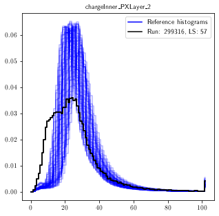
-------------
MSE values:
chargeInner_PXLayer_2 : [0.11759748]
-------------
logprob: [2.14048768]
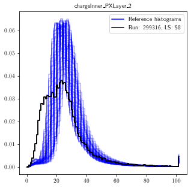
-------------
MSE values:
chargeInner_PXLayer_2 : [0.11930701]
-------------
logprob: [2.12605523]
-------------
MSE values:
chargeInner_PXLayer_2 : [0.11448997]
-------------
logprob: [2.16726804]
-------------
MSE values:
chargeInner_PXLayer_2 : [0.11787179]
-------------
logprob: [2.1381578]
-------------
MSE values:
chargeInner_PXLayer_2 : [0.11709544]
-------------
logprob: [2.14476592]
-------------
MSE values:
chargeInner_PXLayer_2 : [0.11491754]
-------------
logprob: [2.16354048]
-------------
MSE values:
chargeInner_PXLayer_2 : [0.11651301]
-------------
logprob: [2.14975236]
-------------
MSE values:
chargeInner_PXLayer_2 : [0.11659569]
-------------
logprob: [2.14904299]
-------------
MSE values:
chargeInner_PXLayer_2 : [0.11531861]
-------------
logprob: [2.16005649]
-------------
MSE values:
chargeInner_PXLayer_2 : [0.11699337]
-------------
logprob: [2.14563803]
-------------
MSE values:
chargeInner_PXLayer_2 : [0.11511875]
-------------
logprob: [2.16179106]
-------------
MSE values:
chargeInner_PXLayer_2 : [0.11746122]
-------------
logprob: [2.141647]
-------------
MSE values:
chargeInner_PXLayer_2 : [0.11491104]
-------------
logprob: [2.16359701]
-------------
MSE values:
chargeInner_PXLayer_2 : [0.11559568]
-------------
logprob: [2.15765668]

-------------
MSE values:
chargeInner_PXLayer_2 : [0.11706182]
-------------
logprob: [2.14505314]
-------------
MSE values:
chargeInner_PXLayer_2 : [0.11533168]
-------------
logprob: [2.15994317]
-------------
MSE values:
chargeInner_PXLayer_2 : [0.11316278]
-------------
logprob: [2.178928]
-------------
MSE values:
chargeInner_PXLayer_2 : [0.11744022]
-------------
logprob: [2.14182586]
-------------
MSE values:
chargeInner_PXLayer_2 : [0.11295069]
-------------
logprob: [2.18080389]
-------------
MSE values:
chargeInner_PXLayer_2 : [0.11432042]
-------------
logprob: [2.16875009]
-------------
MSE values:
chargeInner_PXLayer_2 : [0.11577394]
-------------
logprob: [2.15611574]
-------------
MSE values:
chargeInner_PXLayer_2 : [0.11596593]
-------------
logprob: [2.15445883]
-------------
MSE values:
chargeInner_PXLayer_2 : [0.11252853]
-------------
logprob: [2.1845485]
-------------
MSE values:
chargeInner_PXLayer_2 : [0.11418823]
-------------
logprob: [2.16990708]

-------------
MSE values:
chargeInner_PXLayer_2 : [0.11592322]
-------------
logprob: [2.15482724]

-------------
MSE values:
chargeInner_PXLayer_2 : [0.11453416]
-------------
logprob: [2.16688216]
-------------
MSE values:
chargeInner_PXLayer_2 : [0.11061984]
-------------
logprob: [2.20165583]
-------------
MSE values:
chargeInner_PXLayer_2 : [0.11639396]
-------------
logprob: [2.15077467]
-------------
MSE values:
chargeInner_PXLayer_2 : [0.11509686]
-------------
logprob: [2.16198121]
-------------
MSE values:
chargeInner_PXLayer_2 : [0.11489376]
-------------
logprob: [2.16374741]
-------------
MSE values:
chargeInner_PXLayer_2 : [0.11569846]
-------------
logprob: [2.15676797]
-------------
MSE values:
chargeInner_PXLayer_2 : [0.11598947]
-------------
logprob: [2.15425584]
-------------
MSE values:
chargeInner_PXLayer_2 : [0.11440008]
-------------
logprob: [2.16805346]
-------------
MSE values:
chargeInner_PXLayer_2 : [0.11418719]
-------------
logprob: [2.16991614]
-------------
MSE values:
chargeInner_PXLayer_2 : [0.11207464]
-------------
logprob: [2.18859017]
-------------
MSE values:
chargeInner_PXLayer_2 : [0.11372892]
-------------
logprob: [2.17393758]
-------------
MSE values:
chargeInner_PXLayer_2 : [0.11627835]
-------------
logprob: [2.1517684]
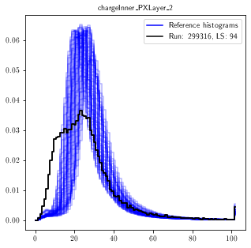
-------------
MSE values:
chargeInner_PXLayer_2 : [0.11539924]
-------------
logprob: [2.15935751]
-------------
MSE values:
chargeInner_PXLayer_2 : [0.11177484]
-------------
logprob: [2.1912688]
-------------
MSE values:
chargeInner_PXLayer_2 : [0.11515268]
-------------
logprob: [2.16149634]
-------------
MSE values:
chargeInner_PXLayer_2 : [0.11584298]
-------------
logprob: [2.15551965]
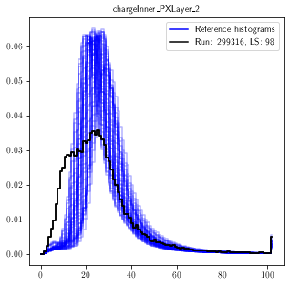
-------------
MSE values:
chargeInner_PXLayer_2 : [0.11319422]
-------------
logprob: [2.17865016]